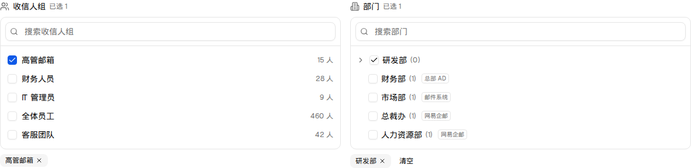
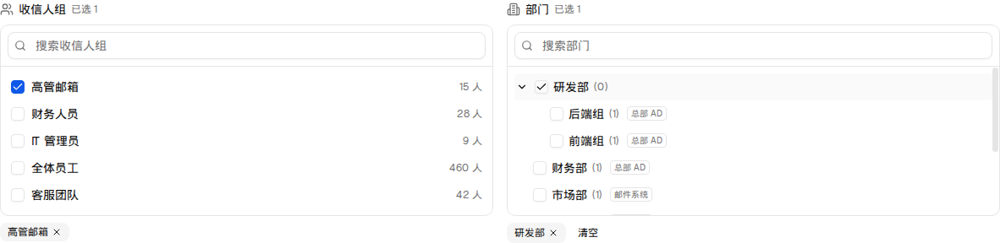
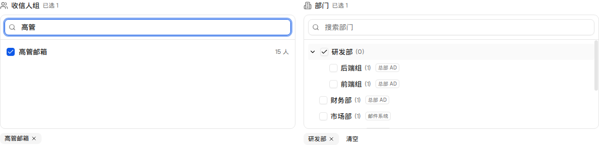

| 所属组件 | 2.5 NotificationScopeSelector（demo/components/email-disposal-center/notification-scope-selector.tsx） |
| 主文件 | email-handling-disposal-settings/index.html |
| 触发路径 | 层级0 隔离区设置 → 通知设置卡片 → 「通知范围」区：① 在收信人组搜索框输入；② 点击部门树节点的 ChevronRight 展开；③ 勾选部门父节点 |
| 数据来源 | 收信人组 ← 群组管理（lib/recipient-groups.ts）；部门树 ← 组织通讯录 deptPath 派生（lib/org-departments.ts）。本页只读引用，不新增/编辑 |

| 元素 | 文案/占位符 | 行为 |
|---|---|---|
| 收信人组 · 标题 | Users 图标 + 「收信人组」+ 「已选 N」 | N = selectedGroupIds.length，实时更新 |
| 收信人组 · 搜索 | 占位符「搜索收信人组」 | 大小写不敏感 includes 过滤；无匹配 → 「无匹配结果」 |
| 收信人组 · 行 | Checkbox + 组名 + 「N 人」 | 点击行任意处切换选中 |
| 部门 · 标题 | Building2 图标 + 「部门」+ 「已选 N」 | N = selectedDeptPaths.length（含被父节点连带选中的子孙） |
| 部门 · 节点 | ChevronRight（有子节点时）+ Checkbox + 名称 + 「(成员数)」+ 来源徽标 | 展开箭头旋转 90°；勾选父节点连带全部子孙；部分选中呈半选态 |
| 部门 · 搜索 | 占位符「搜索部门」 | 命中节点的祖先链自动展开；未命中节点不渲染 |
| 已选回显 | Badge chips + X | 组失效时显示红色「已失效」；部门 chips 末尾有「清空」按钮 |

paddingLeft: depth * 20）。
| 比对项 | demo 实际 DOM | 提取的 HTML | 是否一致 |
|---|---|---|---|
| 根节点 | div.grid.gap-4.md:grid-cols-2 | 同 | 一致 |
| 默认态后代节点数 | 133 | 133 | 一致 |
| 展开后后代节点数 | 150（+17：子部门节点） | 150 | 一致 |
| 搜索「高管」后 | 134（组列表只剩命中项） | 134 | 一致 |
| ScrollArea 高度 | h-44（176px）两栏一致 | 同 | 一致 |
| 半选态 | 父节点部分子孙选中时 data-state=indeterminate | 同（预览引擎复刻） | 一致 |